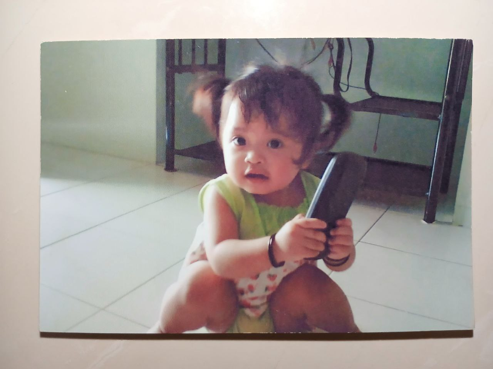
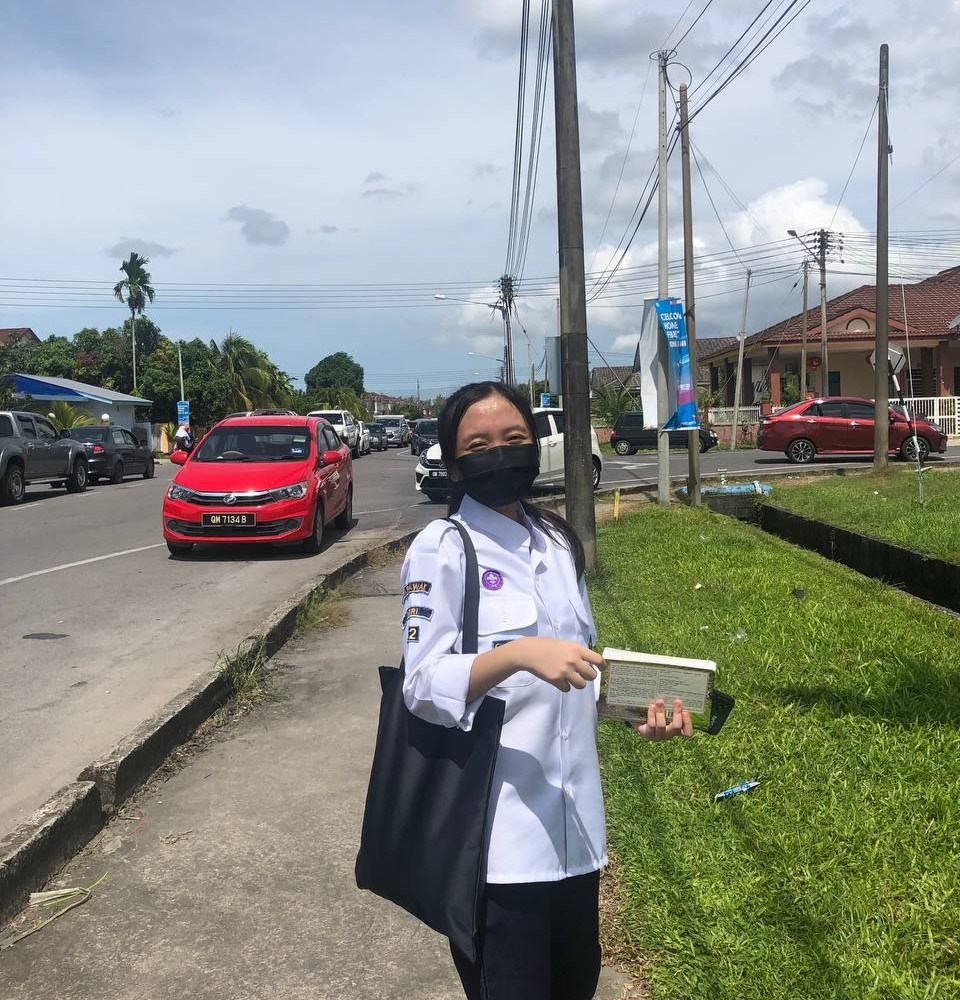
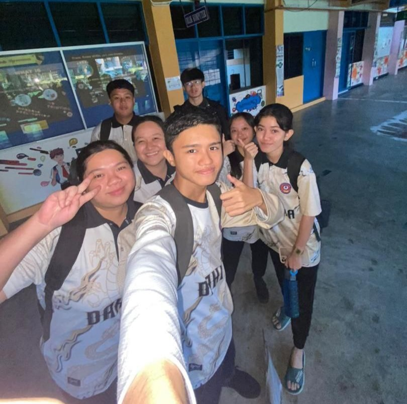
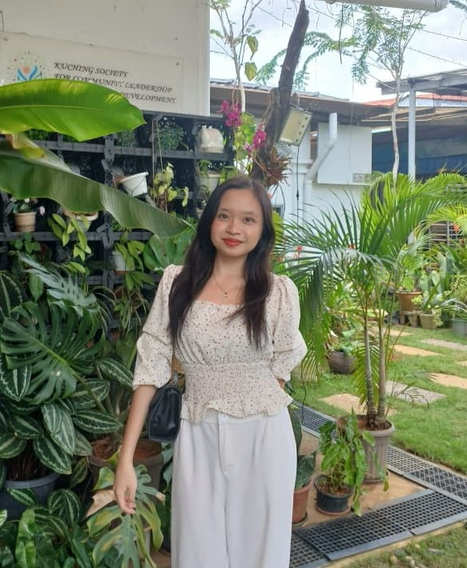

EVERY CHAPTER MADE HER WHO SHE IS
Her Journey.
From the little girl she once was to the person she is becoming today, every stage of life holds a story. This is a journey of growing up, learning, experiencing, and finding herself along the way.
LIFE IN CHAPTERS
A Timeline of Her Life
Every chapter has something to teach, and every memory is a piece of her story.

Her Childhood
The earliest chapter of her life, filled with childhood memories, little adventures, laughter, curiosity, and the simple joys of growing up. These were the years when she began discovering the world around her and creating memories that would stay with her.
Little moments that started it all. ♡
Her School Years
School became a place where she learned more than just lessons from books. It was also where she experienced friendships, challenges, new interests, and moments that helped her slowly understand herself better.
Growing, learning, and finding her way.
Her Teenage Years
As she grew older, life brought new experiences, changes, and lessons. These years became a part of discovering her personality, understanding her values, building meaningful relationships, and learning that growing up comes with its own ups and downs.
A little older, a little wiser.
Her University Life
Entering university opened another chapter of her life. New environments, responsibilities, friendships, and experiences continue to shape her. Along the way, she is learning to become more independent, work towards her dreams, and prepare for the future she hopes to build.
Becoming the person she dreams of.
Who She Is Today
Today, she is still growing, learning, and figuring things out at her own pace. She may not have everything planned out yet, but every experience helps her move forward and become a little closer to the person she wants to be.
Still growing. Still becoming. ♡A THOUGHT TO KEEP
Every Chapter Matters
Not every chapter will be perfect, and not every moment will be easy. But every experience, whether happy or difficult, leaves something behind to learn from.
Her journey is not about having everything figured out. It is about continuing to grow, embracing change, and giving herself the chance to become whoever she wants to be.
MORE CHAPTERS TO COME
Her story is still being written.
There is so much more waiting ahead: new dreams, new experiences, unexpected memories, and chapters she has yet to discover.
Back To HERSTORY →